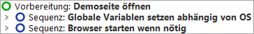
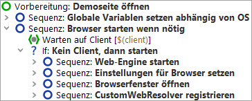

| Version 6.0.3 |
Zuerst wollen wir die Vorbereitung genauer unter die Lupe nehmen:
|
|  | ||
|
| Abbildung 10.3: Der Knoten "Vorbereitung" | ||
Es werden zwei Kindknoten sichtbar:
Lassen Sie uns noch einen kurzen Blick in die Sequenz: Browser starten wenn nötig werfen:
|
|  | ||
|
| Abbildung 10.4: Die Sequenz zum Starten des Browsers | ||
Zu Beginn steht ein Warten auf Client Knoten, der prüft, ob der Client bereits läuft. Nur wenn dies nicht der Fall ist, wird er gestartet.
Der Start des Browsers verläuft in vier Schritten:
Diese vier Schritte werden automatisch generiert, wenn man den Schnellstart-Assistenten nutzt, der im nächsten Tutorialkapitel erklärt wird (Kapitel 11).
Wir wollen nun die Anwendung wirklich starten:
Während der Ausführung wird der gerade aktive Knoten durch "->" markiert.
Nach Abschluss der Startsequenz sollte der Browser mit der "CarConfigurator" Demoseite am Bildschirm erscheinen. Da QF-Test nach Ende der Wiedergabe den Fokus zurückerhält, kann der Browser dadurch auch wieder verdeckt worden sein.
|
|  |
||
|
| Abbildung 10.5: Das CarConfigurator Webdemo | ||
| Letzte Änderung: 6.9.2022 Copyright © 2002-2022 Quality First Software GmbH |